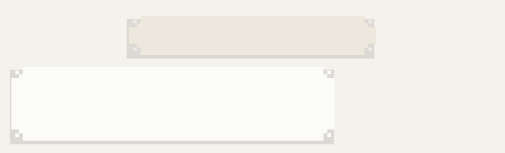

¡Otra vez viajó!
¿Qué pasará ahora?
Si repasa los acontecimientos, encuentra una cierta lógica.
Se ve en una foto, llega, y debe resolver algo para regresar.
Y cuando termina, vuelve.
Eso significa que ¡ay, ay, qué le tocará esta vez!
Mira a su alrededor para ubicarse y alcanza la cubierta.
El mensaje de Federica le llega en ese momento.

14:42, 22 de junio de 1930
FEDE
Javier, contestame! Estás allá? Todo bien?
Lo lee a escondidas y al principio no repara en la maravilla que ha ocurrido.
Si recibió un mensaje que atravesó el tiempo —cómo sucedió lo debería explicar la ciencia, no él, porque seguramente hay una explicación científica que no está a su alcance, y no quiere ponerse a pensar en ese acertijo—, quizá, si le responde, ella reciba su mensaje.
Si eso fuera posible, estarían en contacto y eso es un alivio.